1) Redução Dimensional (UMAP)
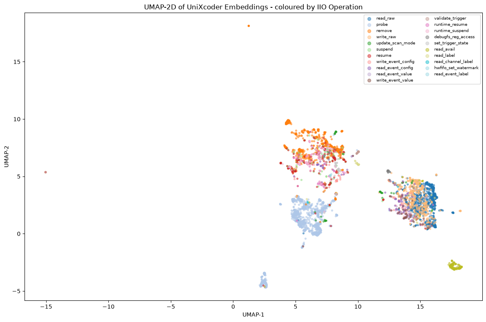
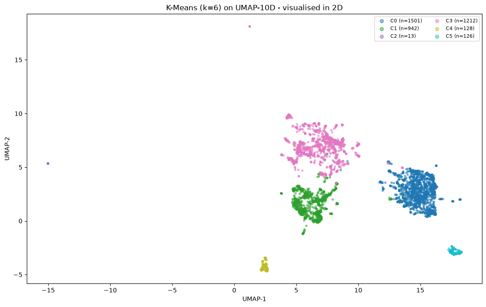
O ponto de partida foi reduzir os embeddings de 768 dimensões produzidos pelo UniXcoder para um espaço de menor dimensão via UMAP. A projeção 2D serve como visualização; a projeção 10D preserva mais estrutura local e foi usada como entrada para HDBSCAN e DBSCAN.
O mapa 2D revela uma nuvem densa e contínua, sem separação clara entre operações - consistente com os scores de diversidade semântica baixos (0,24 a 0,34) observados no Relato 14. Ainda assim, é possível identificar regiões de maior densidade que sugerem subestruturas latentes, motivando a aplicação dos algoritmos de agrupamento.
2) K-Means Clustering
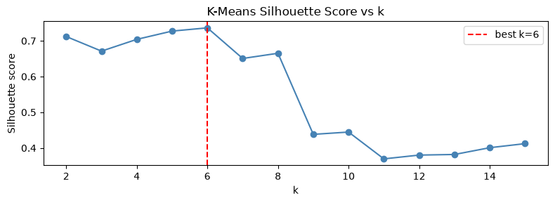
O K-Means foi aplicado como baseline, para comparação com os algoritmos baseados em densidade.
Os clusters resultantes cobrem o espaço de forma razoável, mas as fronteiras são difusas e sem interpretação semântica imediata. Quando os clusters são coloridos por operação IIO, nenhuma operação domina um cluster de forma clara - confirmando que o tipo de operação não é o principal fator de separação no espaço semântico global. Isso motivou investigar algoritmos mais flexíveis quanto à forma dos clusters.
3) HDBSCAN
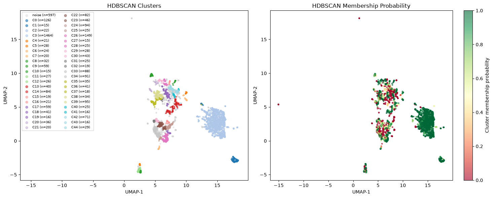
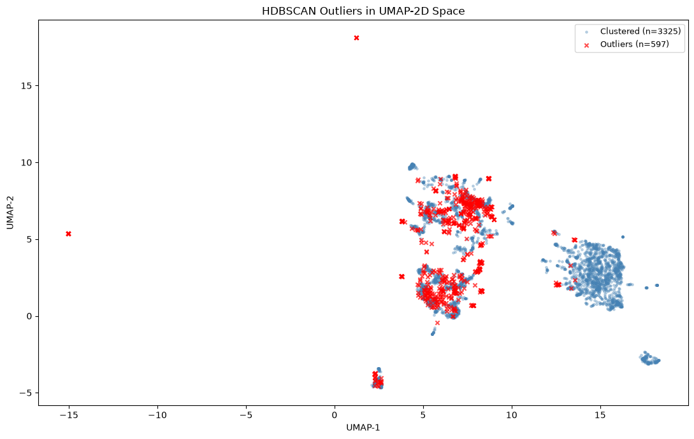
A fração de outliers identificada pelo HDBSCAN é informativa por si só: implementações marcadas como ruído tendem a ser funções incomuns - seja por complexidade elevada, por padrões de código idiossincráticos do driver, ou por operações raras com poucas amostras. O segundo gráfico mostra que esses outliers se distribuem nas bordas da nuvem UMAP, longe dos núcleos densos de cada cluster.
Hierarchical Clustering
Além do HDBSCAN, tentei aplicar Hierarchical Clustering (linkage aglomerativo) sobre uma amostra dos embeddings. O resultado foi inviável para análise: o dendrograma gerado sobre milhares de pontos tornou-se completamente ilegível - os ramos colapsam numa massa indistinta antes de qualquer corte significativo. Além disso, a estrutura contínua e sem separação clara entre grupos no espaço semântico (como visto no UMAP) torna o Hierarchical Clustering pouco relevante para esse contexto: sem clusters bem definidos, a hierarquia resultante reflete ruído mais do que estrutura real. Por isso, o método foi descartado em favor do HDBSCAN e do pipeline UMAP + DBSCAN.
4) UMAP + DBSCAN
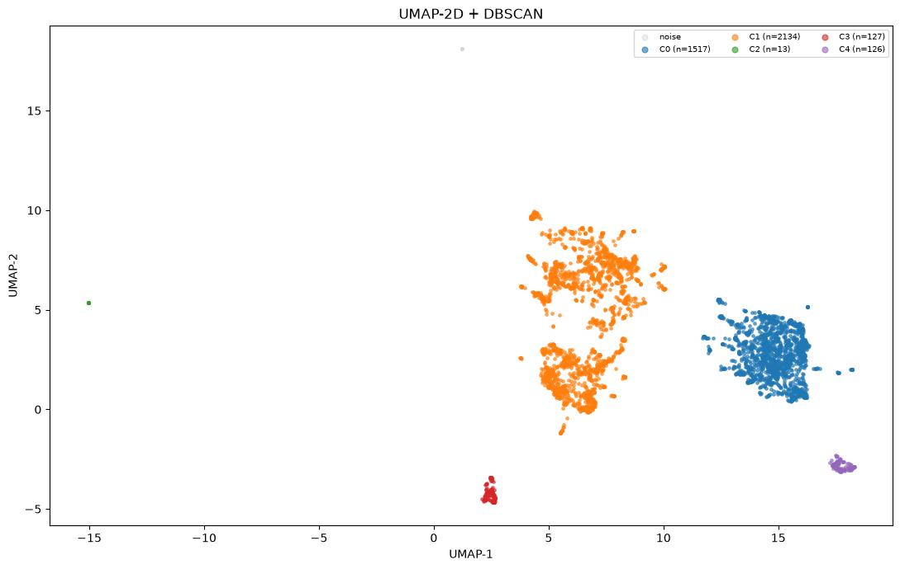
O resultado é qualitativamente similar ao HDBSCAN: clusters difusos, com sobreposição considerável entre operações IIO. A ausência de clusters limpos confirma que a variação semântica no dataset global é baixa demais para que qualquer algoritmo de agrupamento produza estruturas interpretáveis sem filtrar por operação.
5) Distribuição por Operação IIO
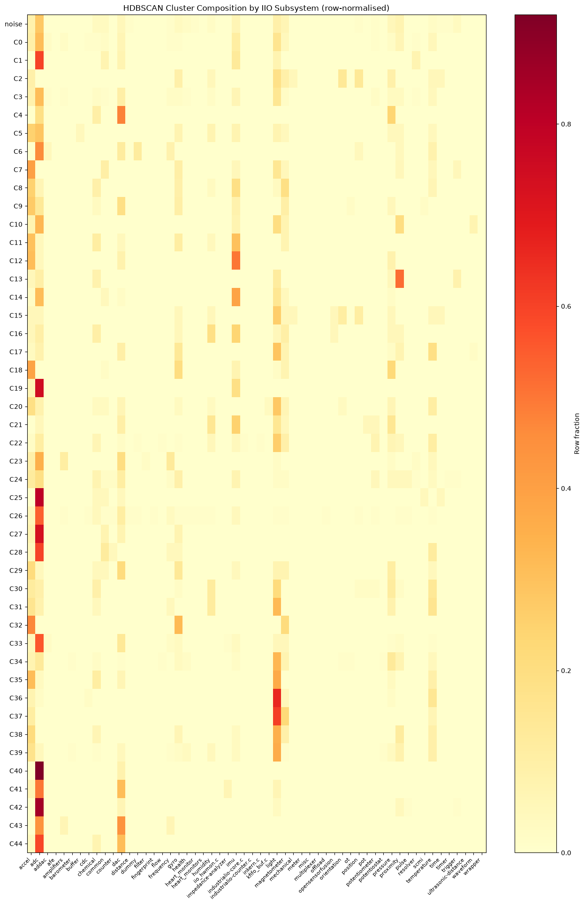
Para avaliar se os clusters têm significado funcional, foi calculada a distribuição
das operações IIO dentro de cada grupo. O resultado reforça a hipótese levantada
pelo UMAP: a maioria dos clusters contém um mix heterogêneo de operações,
probe, read_raw, remove e write_raw
coexistem em proporções similares em quase todos os clusters.
Isso sugere que o agrupamento está capturando padrões transversais às operações - possivelmente relacionados a estilo de código, complexidade estrutural ou família de hardware - mais do que a semântica específica de cada callback IIO. Para extrair clusters com significado funcional claro, é necessário restringir o dataset a uma única operação antes de aplicar o clustering.
6) Composição dos Clusters
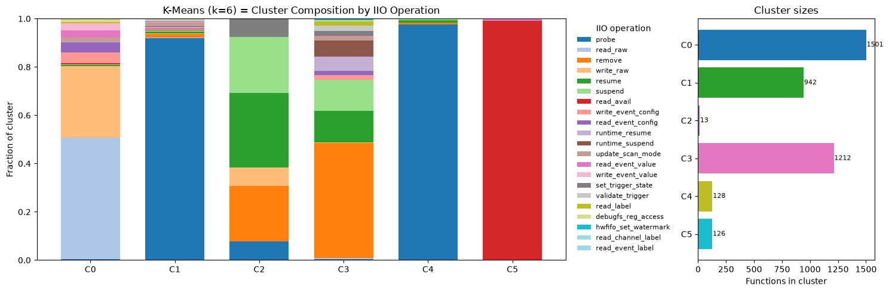
Mesmo sem separação por operação, os clusters apresentam perfis estruturais distintos quando analisados pelas métricas calculadas no Relato 14. Clusters de alta complexidade ciclomática tendem a concentrar funções com muitos nós AST e maior profundidade de aninhamento - um sinal de que o espaço semântico captura, ao menos parcialmente, a complexidade estrutural das implementações.
Esse perfil de composição é útil como diagnóstico: clusters com baixa complexidade
e poucos nós AST correspondem majoritariamente a boilerplate (remove,
suspend), enquanto clusters com alta variância interna misturam operações
complexas de diferentes tipos.
7) Evolução Temporal dos Clusters
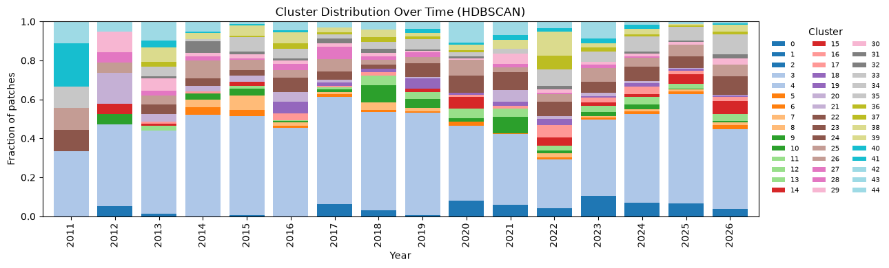
A análise temporal verifica se a composição dos clusters mudou ao longo do histórico de patches IIO. Alguns clusters mostram variação na sua proporção relativa ao longo dos anos, o que pode refletir a adoção de novos padrões de implementação no subsistema - por exemplo, migrações de APIs, introdução de novos helpers ou mudanças de convenção promovidas pelos maintainers.
Sem filtrar por operação, a variação pode simplesmente refletir mudança no volume de patches por tipo, não evolução de práticas.
8) Coesão por Driver
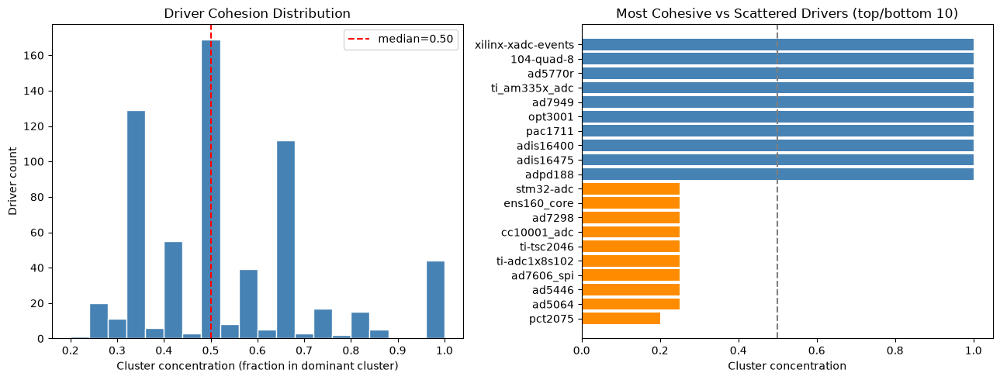
A coesão intradriver mede o quanto as funções de um mesmo arquivo-fonte se assemelham no espaço de embeddings. Um driver com alta coesão tem todas as suas implementações (probe, read_raw, write_raw…) semanticamente próximas - sinal de consistência de estilo e possivelmente de autoria única ou de forte revisão por um maintainer específico.
Drivers com baixa coesão são candidatos prioritários para análise mais aprofundada, possivelmente por terem múltiplos autores com estilos distintos ou por terem evoluído de forma não uniforme ao longo do tempo.
9) Fingerprinting de Autoria
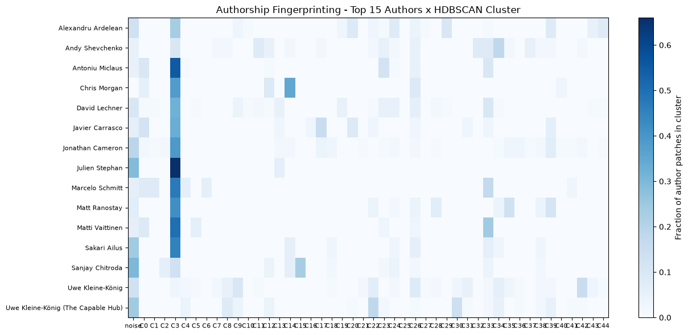
Uma hipótese interessante é que embeddings de código capturem idiossincrasias de estilo suficientemente fortes para distinguir autores - um "fingerprint" semântico. O gráfico compara a similaridade média entre pares de funções do mesmo autor (intra-author) com pares de autores diferentes (inter-author).
O resultado é modesto: a diferença entre as distribuições existe mas é pequena, sugerindo que o estilo individual contribui menos para a posição no espaço semântico do que o tipo de operação implementada. Autores prolíficos (com muitas implementações de tipos variados) tendem a ter coesão intra-autoria baixa - o tipo de callback domina sobre o estilo pessoal.
10) Staging vs. Mainline - Validação da Distribuição de Clusters
drivers/staging/iio é código explicitamente "em progresso". Se os clusters
K-Means capturam qualidade de código, funções de staging deveriam distribuir-se de forma
diferente das funções de mainline (drivers/iio/), concentrando-se nos
clusters associados a padrões menos maduros (ou mais maduros?).
Pipeline
O mesmo pipeline limpo utilizado no mainline foi aplicado ao staging:
parse dos arquivos-fonte em C, extração das implementações de funções IIO,
geração de embeddings UniXcoder de 768 dimensões (armazenados em
data/staging_embeddings.npy). Em seguida, cada função de staging foi
atribuída ao centróide K-Means mais próximo via similaridade cosseno no
espaço 768D sem re-fitting, usando a estrutura de clusters já estabelecida
no mainline como referência fixa.
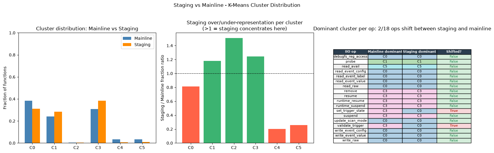
Análise
O teste qui-quadrado de independência aplicado sobre as contagens por cluster rejeita a hipótese de distribuições iguais, as distribuições são significativamente diferentes entre staging e mainline. Isso já é o resultado mais importante: os clusters aprendidos no mainline não são neutros em relação à maturidade do código.
Chi-square test (staging vs mainline cluster distribution) χ² = 43.00 df = 5 p = 3.695e-08 → distributions are SIGNIFICANTLY different
O painel central torna isso concreto: alguns clusters aparecem consistentemente sobre-representados em staging (razão > 1), enquanto outros são dominados pelo mainline. A interpretação é direta, staging tende a cair em regiões semânticas específicas do espaço de embeddings que o mainline evita, sugerindo que essas regiões correspondem a padrões de implementação menos consolidados: boilerplate incompleto, ausência de tratamento de erro padronizado, ou estruturas de código que ainda não seguem as convenções do subsistema.
O painel da direita apresenta uma nuance importante: apenas 2 das 18 operações IIO têm o cluster dominante diferente entre staging e mainline. Ou seja, para a quase totalidade das operações, o cluster que concentra mais implementações é o mesmo nos dois contextos. Isso não invalida o resultado do qui-quadrado, mas localiza onde a diferença está: não em qual cluster domina cada operação, mas em como as funções se distribuem entre clusters dentro de cada operação. Staging e mainline "gravitam" para os mesmos centróides por operação, porém com proporções distintas nas caudas, o que o painel central captura melhor.
Em conjunto, os três painéis contam uma história coerente: o espaço semântico aprendido no mainline não é neutro em relação à maturidade do código (qui-quadrado rejeita uniformidade), a diferença manifesta-se em desvios de proporção por cluster (painel central), mas qual cluster domina cada tipo de callback permanece estável em 16 das 18 operações (painel direito). Isso sugere que os clusters capturam principalmente o tipo de operação e, de forma mais fraca, a maturidade do código; staging não está em um espaço semântico radicalmente diferente, apenas distribuído de forma ligeiramente distinta dentro da mesma estrutura de clusters.
11) Conclusão
A análise de agrupamento global sobre os 16.670 embeddings UniXcoder confirma e estende a conclusão do Relato 14: o espaço semântico do subsistema IIO é denso e contínuo, sem fronteiras nítidas entre grupos. Nenhum dos três algoritmos testados (K-Means, HDBSCAN, UMAP + DBSCAN) produziu clusters com separação limpa por operação IIO ou por driver e o Hierarchical Clustering foi descartado por ser inviável em escala e irrelevante dada a ausência de estrutura hierárquica clara no espaço semântico.
O principal achado é um diagnóstico de limitação: clustering significativo
requer análise dentro de uma operação específica. Misturar
probe, read_raw, write_raw e remove
no mesmo espaço produz clusters que capturam variação transversal (complexidade,
estilo) mas não a semântica funcional de cada operação.
Por isso, o próximo relato restringirá a análise às duas operações mais representativas do dataset:
-
read_raw- 762 implementações, a operação central do subsistema IIO, responsável pela leitura de canais e a mais semanticamente uniforme (diversidade semântica 0,237); -
write_raw- 449 implementações, contrapartida de escrita, com maior diversidade semântica (0,303) e, portanto, maior potencial para revelar subgrupos com estratégias distintas.
A hipótese é que, dentro de uma única operação, o espaço semântico terá variância suficiente para que os algoritmos de clustering produzam grupos interpretáveis, possivelmente refletindo famílias de hardware, padrões de acesso a registradores ou estratégias de tratamento de erro.